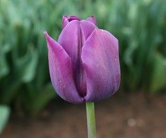

Words to Know
- Angiosperm: Plant that produces flowers and seeds.
- Anther: Top part of the stamen that produces pollen.
- Filament: Stalk of the stamen that bears the anther.
- Corolla: Layers of petals in a flower.
- Morphology: Branch of biology dealing with the form and structure of living organisms.